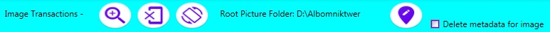

The program "Comments on the image" is designed to save metadata in the image. The file containing metadata should have the format: jpg, jpeg, bmp, gif, png, tif. A file can contain several metadata that should belong to different users. Metadata contains the path where the file for the selected user will be placed.
The program has the following modes of operation:
- certificate of the program;
- the mode of selecting and moving files with metadata;
- entering, saving and deleting metadata from the selected file. To switch to this mode, you need to select an image and double-click with the mouse or select the menu command "Change position (Metadata)".
Mode menu - select and move files
Menu commands (from left to right):
- information about the author;
- select the folder containing the image
- scale display image thumbnail
- moving image through metadata;
(moving the selected image is carried out by the command of the context menu)
- mode "Help about the program."
Mode menu - entering, saving and deleting metadata

Menu commands (from left to right):
- increase in the image (scale of 200%);
- display of the original image
- rotate the image clockwise;
- write metadata to the image;
- removal of metadata in the image.